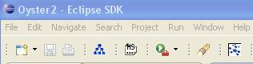

The submit metadata feature
The NeOn Toolkit Oyster plugin comes with the capability of submitting new
instances of omv classes to an Oyster server. This feature is always accessible
through a button on the toolbar, as depicted in the following picture

Once the dialog has been brought up, the user has the choice to
- select the server to receive the metadata.
- Select the class of the OMV instance that is going to be submitted.
- Select the properties that will have a value in the instance
Selecting the OMV class
The first step is to choose the OMV class
to make the instance from. Currently almost all OMV Core classes are supported,
with the exception of "Location", which is not supported by the Oyster server,
thus the client does not make use of it.
Selecting the properties
OMV classes have required and optional properties, and because of that the user
is not forced to supply values for every property of the class. When the user
pushes the Select attributes button, a new dialog will appear, allowing the user
to select which properties will get a value.
On the top of this dialog there is a combo box that will let the user
choose between templates, so
if the class has many properties (such as Ontology) the user may start with
a predefined set of properties selected. Note that there may be no more
than a single template when the class has too few properties.
Providing values for the properties
Once the user has selected the properties that will have a value, he must
start filling the input controls. Depending on the kind of value the
property accepts, the control will be different to help the user with his task.
Here is a list of available input controls:
- Simple combo control.
- Used whenever the input is a free form string.
- Date combo control.
- Used for dates. It's heavily recommended to use the dialog instead of typing the date directly, due to the fact
that the server will accept only a particular date format, and the user may type it wrongly.
- List of strings with suggestions.
- Used whenever the input is a list of free form strings,
the user may type new values, and there is a list of available values that
might be of interest for the user. It
has a button labeled "..." to bring up a list of suggestions. Pressing the Add button
will add the value in the text field to the list, and pressing the Remove button
will remove selected elements from the list. Suggestions usually come from values
used in previous sessions, or from a predefined set of well-known values

- List of strings.
- Used whenever the input is a list of free form strings,
but the user must choose from a predefined list of values. Pressing the Add
button will bring up a dialog with such list.
- Ontology domain control.
- Used for properties where the value will be selected from the DMOZ hierarchy.
It allows the user to select multiple values from such hierarchy. Topics are shown using abbreviated forms,
but the NeOn Toolkit Oyster GUI will send whole URLs to the Oyster server.
- Party input control.
- Used for properties where the value be a list
of parties. It has a list showing current values, and an Change button lo let
the user add values. Pressing the Change button will bring up a new dialog where
the user will be able to specify parties as people or organizations, and remove
parties from the list
The party control

The party input dialog